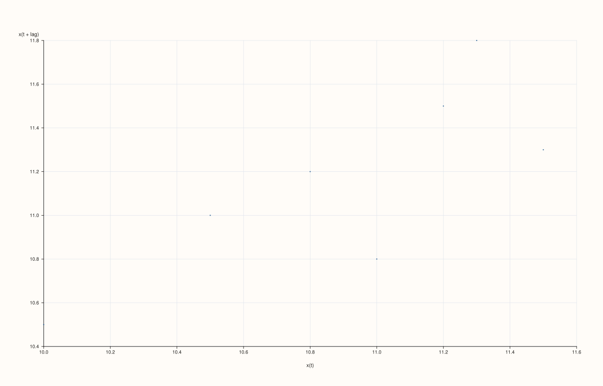
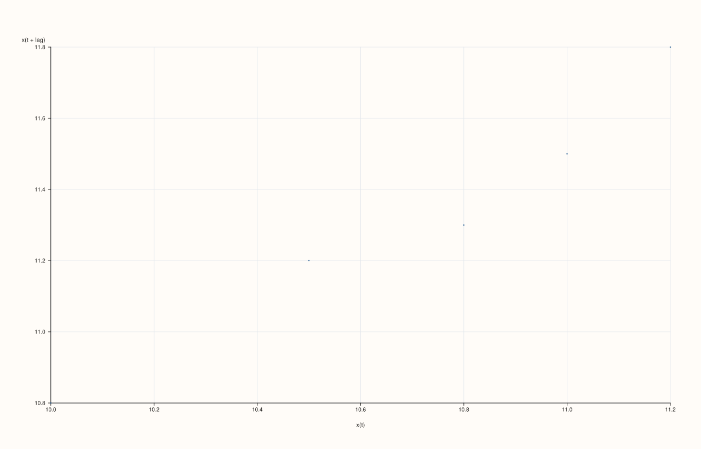
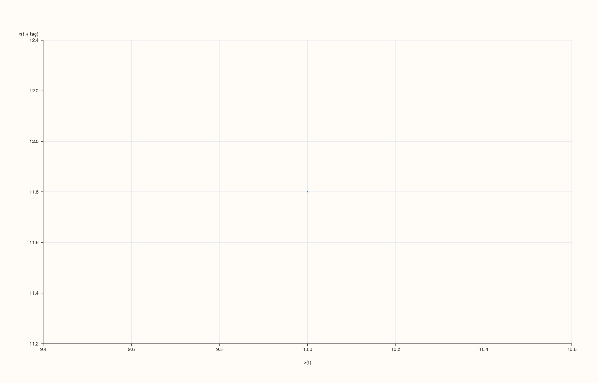
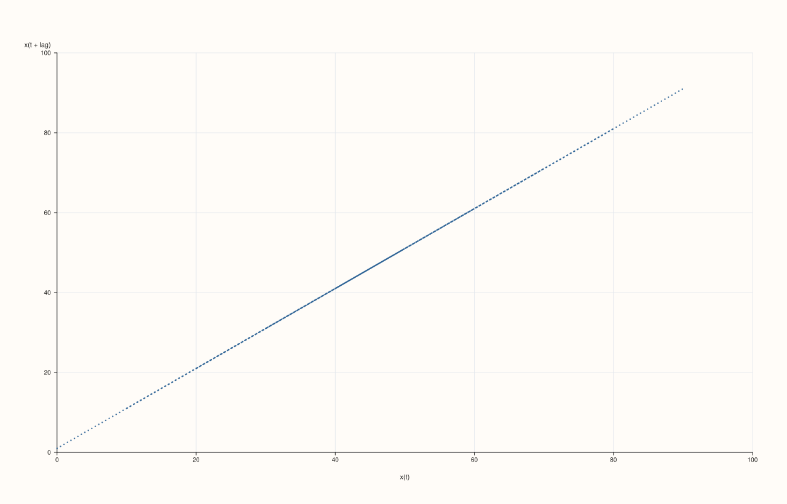
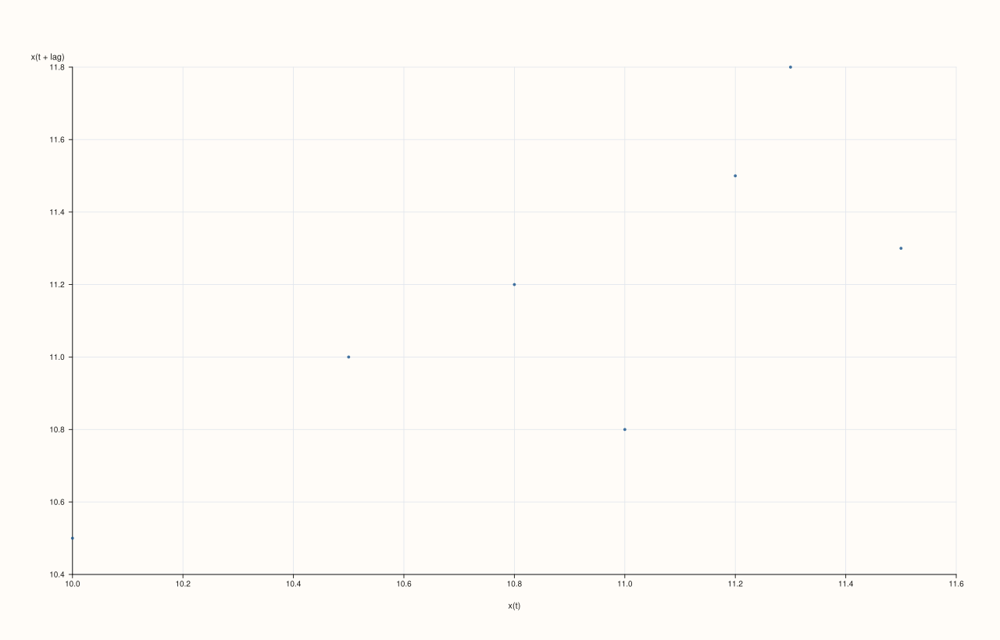

DataFramePlotAccessor::lag¶
Back to DataFramePlotAccessor API Reference
Signature¶
DataFramePlotAccessor::lag(
std::string_view feature,
const LagPlotOptions& options = {}) const -> pluss::pl::Studio
What It Does¶
Draws a lag plot for one numeric feature: a scatter of x(t) against x(t + lag) — each
point’s horizontal position is a value from the series, and its vertical position is the
value lag steps later in the same series. A cloud of points scattered along the diagonal
suggests strong positive autocorrelation at that lag; a cloud with no visible structure
suggests the series behaves close to random noise at that lag. This is the single-lag,
scatter-based sibling of act(), which instead sweeps every lag and reduces each
one to a single correlation coefficient.
Shares the single-feature resolution rule with act() and
bootstrap(): the named feature must resolve to exactly one numeric
(Series-kind) feature — see act()’s callout for the exact throw text.
Note
At least two data points are required
A feature with fewer than two rows throws "flash::lagplot requires at least two points".
Parameters¶
feature (std::string_view)
The single numeric feature to lag against itself. Must resolve to a Series-kind
feature — see act()’s shared-diagnostics note.
options (LagPlotOptions)
cpp struct LagPlotOptions { std::int64_t lag{1}; std::int64_t max_points{2500}; double marker_area{16.0}; float trace_width{0.55F}; };
lag is clamped internally to [1, n - 1] where n is the feature’s row count — a
lag of 0 or larger than the data supports is silently clamped rather than throwing.
Given n rows and a clamped lag, usable = n - lag points are plotted: the point at
index i (for i in 0..usable) is (x[i], x[i + lag]). max_points caps how many of
these usable points are actually drawn — when usable exceeds max_points, points are
subsampled at a stride (not randomly chosen) so the count stays within budget while still
spanning the full range. marker_area and trace_width control point size and marker
outline width respectively (marker_area is floored to a minimum of 2.0).
Returns¶
pluss::pl::Studio
A figure with one pane containing a single scatter (“cloud”) trace of x(t) vs.
x(t + lag), axis-labeled "x(t)" and "x(t + lag)".
Examples¶
Example 1. Default options (lag = 1): each point compares a value to the very next one in
the series.
using namespace pluss::table;
auto readings = DataFrame({
{"level", Thread(pluss::make_series({10.0, 10.5, 11.0, 10.8, 11.2, 11.5, 11.3, 11.8}))},
});
auto chart = readings.plot().lag("level");
chart.show();
With n = 8 rows and lag = 1, usable = 7 points are plotted: (10.0, 10.5), (10.5, 11.0), …, (11.3, 11.8) — a tight, mostly increasing sequence suggests strong positive
lag-1 autocorrelation.

Example 2. An explicit LagPlotOptions with a larger lag.
LagPlotOptions options;
options.lag = 3;
auto chart = readings.plot().lag("level", options);
chart.show();
With lag = 3, usable = 8 - 3 = 5 points are plotted: (10.0, 10.8), (10.5, 11.2),
(11.0, 11.5), (10.8, 11.3), (11.2, 11.8).

Example 3. A lag request larger than the data supports is silently clamped, not thrown.
LagPlotOptions oversized;
oversized.lag = 100;
auto chart = readings.plot().lag("level", oversized);
With only 8 rows, lag is clamped to n - 1 = 7, leaving exactly one usable point: (x[0], x[7]), i.e. (10.0, 11.8).

Example 4. max_points subsampling on a larger series.
std::vector<double> long_series;
for (int i = 0; i < 5000; ++i) {
long_series.push_back(static_cast<double>(i % 50) + 0.01 * i);
}
auto big = DataFrame({
{"trend", Thread(pluss::make_series(long_series))},
});
LagPlotOptions capped;
capped.max_points = 500;
auto chart = big.plot().lag("trend", capped);
chart.save_pdf("trend_lag.pdf");
usable = 4999 points would otherwise be plotted; capped to roughly 500 by taking every
10th point (step = ceil(4999 / 500) = 10), not a random sample.

Example 5. Larger markers and a thicker outline.
LagPlotOptions styled;
styled.marker_area = 40.0;
styled.trace_width = 1.5F;
auto chart = readings.plot().lag("level", styled);
chart.show();

Example 6. Fewer than two rows throws.
auto single_row = DataFrame({
{"level", Thread(pluss::make_series({10.0}))},
});
try {
auto bad = single_row.plot().lag("level");
} catch (const std::exception& e) {
std::cout << e.what();
}
Output¶
flash::lagplot requires at least two points
Notes¶
featuremust resolve to exactly one numeric feature — seeact()’s shared note.lagis clamped to[1, n - 1], never throwing for an out-of-range request.max_pointssubsamples by stride, not randomly, whenusableexceeds it.A feature with fewer than two rows throws before any point is drawn.
Returns a
pluss::pl::Studio— seeline()’s important callout for how to view or save the result.
See Also¶
DataFramePlotAccessor::act: every lag’s correlation coefficient at once, instead of one lag’s raw scatter.DataFramePlotAccessor::bootstrap: another single-feature diagnostic, based on resampling rather than lags.DataFramePlotAccessor::scatter: the general-purpose two-feature scatter this method specializes for a series against its own lagged copy.